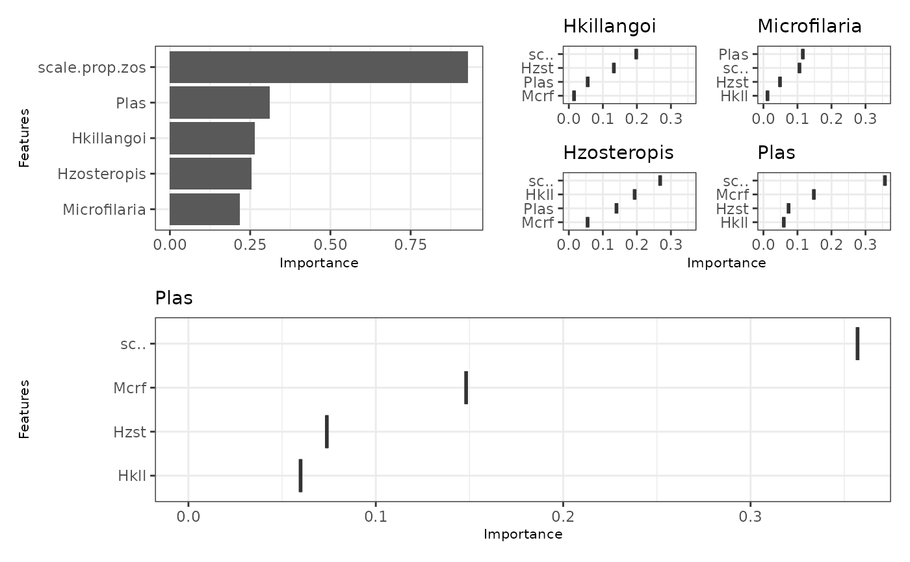
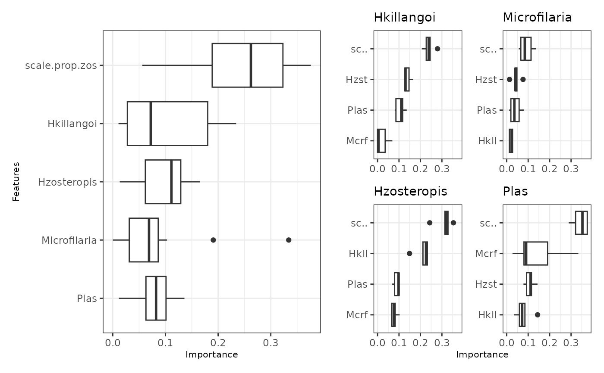

Summarizes variable importance in a mrIML model at both a global
(across all the response models) and local (for individual response models) level.
This can be done for a plain mrIML model or bootstrap results obtained from
mrBootstrap().
Usage
mrVip(
mrIMLobj,
mrBootstrap_obj = NULL,
threshold = 0.1,
global_top_var = 10,
local_top_var = 5,
taxa = NULL,
model_perf = NULL
)Arguments
- mrIMLobj
A list object output by
mrIMLpredicts().- mrBootstrap_obj
A list of bootstrap results output by
mrBootstrap().- threshold
The performance threshold for response models (AUC for classification and R2 for regression). Only response models that meet this performance criterion are plotted.
- global_top_var
The number of top global variables to display (default: 10).
- local_top_var
The number of top local variables for each response to display (default: 5).
- taxa
A character string identifying which response model should be plotted.
- model_perf
A list object containing model performance metrics output by
mrIMLperformance(). If not supplied, thenmrIMLperformance()is run insidemrvip()to get performance metrics.
Value
A list containing:
$vi_data: Variable importance data in its raw form (including bootstrap samples ifmrBootstrap_objwas supplied).$vi_tbl: Variable importance data point estimates.$vi_plot: A grouped plot of the most important variables both globally and for the individual response models.
Examples
library(tidymodels)
# Without bootstrap
data <- MRFcov::Bird.parasites
Y <- data %>%
select(-scale.prop.zos) %>%
select(order(everything()))
X <- data %>%
select(scale.prop.zos)
model_rf <- rand_forest(
trees = 10, # 10 trees are set for brevity. Aim to start with 1000
mode = "classification",
mtry = tune(),
min_n = tune()
) %>%
set_engine("randomForest")
mrIML_rf <- mrIMLpredicts(
X = X,
Y = Y,
X1 = Y,
Model = model_rf,
prop = 0.7,
k = 2,
racing = FALSE
)
#>
|
| | 0%
|
|================== | 25%
|
|=================================== | 50%
|
|==================================================== | 75%
|
|======================================================================| 100%
#> i Creating pre-processing data to finalize unknown parameter: mtry
#> i Creating pre-processing data to finalize unknown parameter: mtry
#> i Creating pre-processing data to finalize unknown parameter: mtry
#> i Creating pre-processing data to finalize unknown parameter: mtry
mrVip(mrIML_rf, taxa = "Plas")
#> [[1]]
#> # A tibble: 16 × 4
#> var sd_value response bootstrap
#> <chr> <dbl> <chr> <lgl>
#> 1 Hkillangoi 0.193 Hzosteropis NA
#> 2 Microfilaria 0.0551 Hzosteropis NA
#> 3 Plas 0.140 Hzosteropis NA
#> 4 scale.prop.zos 0.268 Hzosteropis NA
#> 5 Hzosteropis 0.132 Hkillangoi NA
#> 6 Microfilaria 0.0153 Hkillangoi NA
#> 7 Plas 0.0554 Hkillangoi NA
#> 8 scale.prop.zos 0.198 Hkillangoi NA
#> 9 Hkillangoi 0.0598 Plas NA
#> 10 Hzosteropis 0.0739 Plas NA
#> 11 Microfilaria 0.148 Plas NA
#> 12 scale.prop.zos 0.357 Plas NA
#> 13 Hkillangoi 0.0120 Microfilaria NA
#> 14 Hzosteropis 0.0487 Microfilaria NA
#> 15 Plas 0.116 Microfilaria NA
#> 16 scale.prop.zos 0.106 Microfilaria NA
#>
#> [[2]]
#> Hkillangoi Hzosteropis Microfilaria Plas
#> Hzosteropis 0.13228724 0.16421928 0.04866281 0.07386037
#> Microfilaria 0.01527603 0.05511968 0.07057552 0.14819320
#> Plas 0.05543465 0.14000399 0.11575133 0.15974637
#> scale.prop.zos 0.19811860 0.26836209 0.10591910 0.35708769
#> Hkillangoi 0.10027913 0.19339134 0.01196885 0.05984423
#>
#> [[3]]

#>
# With bootstrap
# \donttest{
mrIML_rf_boot <- mrIML_rf %>%
mrBootstrap(num_bootstrap = 5)
#>
|
| | 0%
|
|==== | 5%
|
|======= | 10%
|
|========== | 15%
|
|============== | 20%
|
|================== | 25%
|
|===================== | 30%
|
|======================== | 35%
|
|============================ | 40%
|
|================================ | 45%
|
|=================================== | 50%
|
|====================================== | 55%
|
|========================================== | 60%
|
|============================================== | 65%
|
|================================================= | 70%
|
|==================================================== | 75%
|
|======================================================== | 80%
|
|============================================================ | 85%
|
|=============================================================== | 90%
|
|================================================================== | 95%
|
|======================================================================| 100%
mrIML_rf_vip <- mrVip(
mrIML_rf,
mrBootstrap_obj = mrIML_rf_boot
)
mrIML_rf_vip
#> [[1]]
#> # A tibble: 80 × 4
#> var sd_value response bootstrap
#> <chr> <dbl> <chr> <int>
#> 1 Hkillangoi 0.212 Hzosteropis 1
#> 2 Microfilaria 0.0820 Hzosteropis 1
#> 3 Plas 0.0682 Hzosteropis 1
#> 4 scale.prop.zos 0.243 Hzosteropis 1
#> 5 Hkillangoi 0.226 Hzosteropis 2
#> 6 Microfilaria 0.0751 Hzosteropis 2
#> 7 Plas 0.0794 Hzosteropis 2
#> 8 scale.prop.zos 0.354 Hzosteropis 2
#> 9 Hkillangoi 0.232 Hzosteropis 3
#> 10 Microfilaria 0.0644 Hzosteropis 3
#> # ℹ 70 more rows
#>
#> [[2]]
#> Hkillangoi Hzosteropis Microfilaria Plas
#> Hzosteropis 0.1394056 0.17256208 0.04333982 0.10812907
#> Microfilaria 0.0217644 0.07801797 0.04886374 0.14457105
#> Plas 0.1063337 0.08954586 0.04091455 0.16861083
#> scale.prop.zos 0.2392751 0.31212730 0.09104253 0.34306380
#> Hkillangoi 0.1266947 0.21055719 0.02015806 0.07867941
#>
#> [[3]]

#>
# }